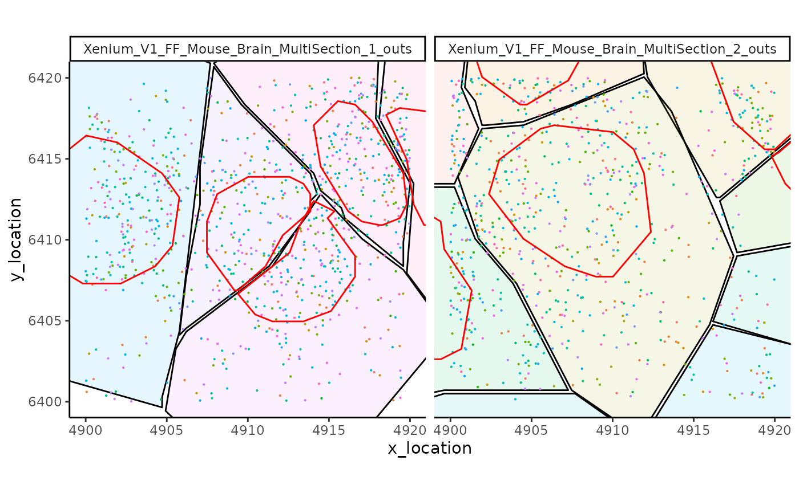

An introduction to the MoleculeExperiment Class
Bárbara Zita Peters Couto
School of Mathematics and Statistics, The University of Sydney, Sydney, NSW, 2006, AustraliaCharles Perkins Centre, The University of Sydney, Sydney, NSW, 2006, AustraliaSydney Precision Data Science Centre, The University of Sydney, Sydney, NSW, 2006, AustraliaNick Robertson
School of Mathematics and Statistics, The University of Sydney, Sydney, NSW, 2006, AustraliaCharles Perkins Centre, The University of Sydney, Sydney, NSW, 2006, AustraliaSydney Precision Data Science Centre, The University of Sydney, Sydney, NSW, 2006, AustraliaEllis Patrick
School of Mathematics and Statistics, The University of Sydney, Sydney, NSW, 2006, AustraliaCharles Perkins Centre, The University of Sydney, Sydney, NSW, 2006, AustraliaSydney Precision Data Science Centre, The University of Sydney, Sydney, NSW, 2006, AustraliaWestmead Institute for Medical Research, University of Sydney, AustraliaShila Ghazanfar
School of Mathematics and Statistics, The University of Sydney, Sydney, NSW, 2006, AustraliaCharles Perkins Centre, The University of Sydney, Sydney, NSW, 2006, AustraliaSydney Precision Data Science Centre, The University of Sydney, Sydney, NSW, 2006, Australia12 April 2023
Source:vignettes/MoleculeExperiment.Rmd
MoleculeExperiment.RmdMoleculeExperiment
The R package MoleculeExperiment contains functions to create and work with objects from the new MoleculeExperiment class. We introduce this class for analysing molecule-based spatial transcriptomics data (e.g., Xenium by 10X, CosMx SMI by Nanostring, and Merscope by Vizgen, among others).
Why the MoleculeExperiment class?
The goal of the MoleculeExperiment class is to: 1) Enable analysis of spatial transcriptomics (ST) data at the molecule level, independent of aggregating to the cell or tissue level. 2) Enable aggregation to a SpatialExperiment object given combinations of molecules and segmentation boundaries. 2) Standardise molecule-based ST data across vendors, to hopefully facilitate comparison of different data sources and common analytical and visualisation workflows.
Installation
The latest release of MoleculeExperiment can be installed using:
if (!require("BiocManager", quietly = TRUE))
install.packages("BiocManager")
BiocManager::install("MoleculeExperiment")Minimal example
- Load required libraries.
- Create MoleculeExperiment object with example Xenium data, taken over a small patch.
repoDir <- system.file("extdata", package = "MoleculeExperiment")
me <- readXenium(repoDir,
keepCols = "essential")
me
#> class: MoleculeExperiment
#> 2 samples: Xenium_V1_FF_Mouse_Brain_MultiSection_1_outs Xenium_V1_FF_Mouse_Brain_MultiSection_2_outs
#>
#> @molecules contents:
#> -detected assay:
#> 178 unique features across all samples in assay "detected": 2010300C02Rik Acsbg1 Adamts2 Adamtsl1 Angpt1 Aqp4 ...
#> 869.5 molecules on average across all samples in assay "detected"
#> Location range across all samples in assay "detected": [4900,4919.98] x [6400.02,6420]- Use standardised data in ME object for molecule-level analyses. For example, plot a simple digital in-situ, with cell boundaries overlaid.
ggplot(molecules(me, flatten = TRUE), aes(x = x_location, y = y_location)) +
geom_point(size = 0.05) +
geom_polygon(aes(group = segment_id),
fill = NA,
colour = "black",
data = boundaries(me,
assayName = "cell",
flatten = TRUE)) +
facet_wrap(~sample_id) +
coord_fixed()
- Finally, it is also possible to go from a MoleculeExperiment object to a SpatialExperiment object. This enables the transition from a molecule-level analysis to a cell-level analysis with already existing tools.
# transform ME to SPE object
spe <- countMolecules(me)
spe
#> class: SpatialExperiment
#> dim: 178 14
#> metadata(0):
#> assays(1): counts
#> rownames(178): 2010300C02Rik Acsbg1 ... Trem2 Trp73
#> rowData names(0):
#> colnames(14): Xenium_V1_FF_Mouse_Brain_MultiSection_1_outs.67500
#> Xenium_V1_FF_Mouse_Brain_MultiSection_1_outs.67512 ...
#> Xenium_V1_FF_Mouse_Brain_MultiSection_2_outs.65070
#> Xenium_V1_FF_Mouse_Brain_MultiSection_2_outs.65071
#> colData names(4): sample_id x_location y_location cell_id
#> reducedDimNames(1): spatial
#> mainExpName: NULL
#> altExpNames(0):
#> spatialCoords names(2) : x_location y_location
#> imgData names(0):The ME object in detail
Constructing an ME object
Use case 1: from dataframes to ME object
Here we demonstrate how to work with an ME object from toy data, representing a scenario where both the detected transcripts information and the boundary information have already been read into R. This requires the standardisation of the data with the dataframeToMEList() function.
The flexibility of the arguments in dataframeToMEList() enable the creation of a standard ME object across dataframes comming from different vendors of molecule-based spatial transcriptomics technologies.
- Generate a toy transcripts data.frame.
moleculesDf <- data.frame(
sample_id = rep(c("sample1", "sample2"), times = c(30, 20)),
features = rep(c("gene1", "gene2"), times = c(20, 30)),
x_coords = runif(50),
y_coords = runif(50)
)
head(moleculesDf)
#> sample_id features x_coords y_coords
#> 1 sample1 gene1 0.85495906 0.4467734
#> 2 sample1 gene1 0.99809022 0.9358170
#> 3 sample1 gene1 0.97953119 0.9806237
#> 4 sample1 gene1 0.24946555 0.7738943
#> 5 sample1 gene1 0.60894173 0.6703259
#> 6 sample1 gene1 0.06448276 0.3273922- Generate a toy boundaries data.frame.
boundariesDf <- data.frame(
sample_id = rep(c("sample1", "sample2"), times = c(16, 6)),
cell_id = rep(c("cell1", "cell2", "cell3", "cell4",
"cell1", "cell2"),
times = c(4, 4, 4, 4, 3, 3)),
vertex_x = c(0, 0.5, 0.5, 0,
0.5, 1, 1, 0.5,
0, 0.5, 0.5, 0,
0.5, 1, 1, 0.5,
0, 1, 0, 0, 1, 1),
vertex_y = c(0, 0, 0.5, 0.5,
0, 0, 0.5, 0.5,
0.5, 0.5, 1, 1,
0.5, 0.5, 1, 1,
0, 1, 1, 0, 0, 1)
)
head(boundariesDf)
#> sample_id cell_id vertex_x vertex_y
#> 1 sample1 cell1 0.0 0.0
#> 2 sample1 cell1 0.5 0.0
#> 3 sample1 cell1 0.5 0.5
#> 4 sample1 cell1 0.0 0.5
#> 5 sample1 cell2 0.5 0.0
#> 6 sample1 cell2 1.0 0.0- Standardise transcripts dataframe to ME list format.
moleculesMEList <- dataframeToMEList(moleculesDf,
dfType = "transcripts",
assayName = "detected",
sampleCol = "sample_id",
factorCol = "features",
xCol = "x_coords",
yCol = "y_coords")
str(moleculesMEList, max.level = 3)
#> List of 1
#> $ detected:List of 2
#> ..$ sample1:List of 2
#> .. ..$ gene1: tibble [20 × 2] (S3: tbl_df/tbl/data.frame)
#> .. ..$ gene2: tibble [10 × 2] (S3: tbl_df/tbl/data.frame)
#> ..$ sample2:List of 1
#> .. ..$ gene2: tibble [20 × 2] (S3: tbl_df/tbl/data.frame)- Standardise boundaries dataframe to ME list format.
boundariesMEList <- dataframeToMEList(boundariesDf,
dfType = "boundaries",
assayName = "cell",
sampleCol = "sample_id",
factorCol = "cell_id",
xCol = "vertex_x",
yCol = "vertex_y")
str(boundariesMEList, 3)
#> List of 1
#> $ cell:List of 2
#> ..$ sample1:List of 4
#> .. ..$ cell1: tibble [4 × 2] (S3: tbl_df/tbl/data.frame)
#> .. ..$ cell2: tibble [4 × 2] (S3: tbl_df/tbl/data.frame)
#> .. ..$ cell3: tibble [4 × 2] (S3: tbl_df/tbl/data.frame)
#> .. ..$ cell4: tibble [4 × 2] (S3: tbl_df/tbl/data.frame)
#> ..$ sample2:List of 2
#> .. ..$ cell1: tibble [3 × 2] (S3: tbl_df/tbl/data.frame)
#> .. ..$ cell2: tibble [3 × 2] (S3: tbl_df/tbl/data.frame)- Create an ME object by using the MoleculeExperiment object constructor.
toyME <- MoleculeExperiment(molecules = moleculesMEList,
boundaries = boundariesMEList)
toyME
#> class: MoleculeExperiment
#> 2 samples: sample1 sample2
#>
#> @molecules contents:
#> -detected assay:
#> 2 unique features across all samples in assay "detected": gene1 gene2 ...
#> 25 molecules on average across all samples in assay "detected"
#> Location range across all samples in assay "detected": [0.02,1] x [0.1,0.99]Use case 2: from Xenium to ME object
The MoleculeExperiment package also provides functions to directly work with the directories containing output files of commonly used technologies. This is especially useful to work with data from multiple samples.
repoDir <- system.file("extdata", package = "MoleculeExperiment")
me <- readXenium(repoDir,
keepCols = "essential",
addBoundaries = "cell")
me
#> class: MoleculeExperiment
#> 2 samples: Xenium_V1_FF_Mouse_Brain_MultiSection_1_outs Xenium_V1_FF_Mouse_Brain_MultiSection_2_outs
#>
#> @molecules contents:
#> -detected assay:
#> 178 unique features across all samples in assay "detected": 2010300C02Rik Acsbg1 Adamts2 Adamtsl1 Angpt1 Aqp4 ...
#> 869.5 molecules on average across all samples in assay "detected"
#> Location range across all samples in assay "detected": [4900,4919.98] x [6400.02,6420]readXenium() standardises the transcript and boundary information such that the column names are consistent across technologies when handling ME objects.
In addition, readXenium() enables the user to decide if they want to keep all data that is vendor-specific (e.g., column with qv score), some columns of interest, or only the essential columns. The latter refers to feature names and locations of the detected transcripts, and segment ids and boundary locations of the segmentation results.
ME object structure
A MoleculeExperiment object contains a @molecules slot and a @boundaries slot.
Both slots have a hierarchical list structure that consists of a nested list, ultimately ending in a data.frame/tibble. Traditional rectangular data structures, like dataframes, redundantly store gene names and sample IDs for the millions of transcripts. In contrast, data in a list enables us to avoid this redundancy and work with objects of smaller size.
molecules slot
The @molecules slot contains molecule-level information. The essential data it contains is the feature name (e.g., gene names) and x and y locations of the detected molecules (e.g., transcripts), in each sample. Nevertheless, the user can also decide to keep all molecule metadata (e.g., subcellular location: nucleus/cytoplasm).
The nested list in the molecules slot has the following hierarchical structure: “assay name” > “sample ID” > “feature name” > dataframe/tibble with X and Y locations (and other additional columns of interest).
strMolecules(me)
#> List of 1
#> $ detected:List of 2
#> ..$ Xenium_V1_FF_Mouse_Brain_MultiSection_1_outs:List of 137
#> .. ..$ 2010300C02Rik : tibble [11 × 2] (S3: tbl_df/tbl/data.frame)
#> .. ..$ Acsbg1 : tibble [6 × 2] (S3: tbl_df/tbl/data.frame)
#> .. .. [list output truncated]
#> ..$ Xenium_V1_FF_Mouse_Brain_MultiSection_2_outs:List of 143
#> .. ..$ 2010300C02Rik: tibble [9 × 2] (S3: tbl_df/tbl/data.frame)
#> .. ..$ Acsbg1 : tibble [10 × 2] (S3: tbl_df/tbl/data.frame)
#> .. .. [list output truncated]boundaries slot
The @boundaries slot contains information from segmentation analyses (e.g., cell boundaries, or nucleus boundaries).
The nested list in the boundaries slot has the following hierarchical structure: “assay name” > “sample ID” > “segment ID” > dataframe/tibble with the vertex coordinates defining the boundaries for each segment. For example, if the boundary information is for cells, the assay name can be set to “cell”; or “nucleus” if one is using nucleus boundaries.
strBoundaries(me)
#> List of 1
#> $ cell:List of 2
#> ..$ Xenium_V1_FF_Mouse_Brain_MultiSection_1_outs:List of 5
#> .. ..$ 67500: tibble [13 × 2] (S3: tbl_df/tbl/data.frame)
#> .. ..$ 67512: tibble [13 × 2] (S3: tbl_df/tbl/data.frame)
#> .. .. [list output truncated]
#> ..$ Xenium_V1_FF_Mouse_Brain_MultiSection_2_outs:List of 9
#> .. ..$ 65043: tibble [13 × 2] (S3: tbl_df/tbl/data.frame)
#> .. ..$ 65044: tibble [13 × 2] (S3: tbl_df/tbl/data.frame)
#> .. .. [list output truncated]Methods
Here we introduce basic methods to access and manipulate data in an ME object, i.e., getters and setters, respectively.
Getters
The main getters are molecules() and boundaries(). NOTE: the output of these methods is the ME nested list, which can be very large on screen. Thus, these getters should be used when wanting to work with the data. To quickly view the slot contents, use strMolecules() and strBoundaries() instead.
# NOTE: output not shown as it is too large
# access molecules slot
molecules(me)
# access cell boundary information in boundaries slot
boundaries(me, "cell")For ease of use, these getters have arguments that enable the transformation of the data from a nested ME list format to a data.frame format.
molecules(me, assayName = "detected", flatten = TRUE)
#> # A tibble: 1,739 × 4
#> x_location y_location feature_name sample_id
#> * <dbl> <dbl> <chr> <chr>
#> 1 4918. 6411. 2010300C02Rik Xenium_V1_FF_Mouse_Brain_MultiSection_1_…
#> 2 4901. 6417. 2010300C02Rik Xenium_V1_FF_Mouse_Brain_MultiSection_1_…
#> 3 4901. 6417. 2010300C02Rik Xenium_V1_FF_Mouse_Brain_MultiSection_1_…
#> 4 4910. 6417. 2010300C02Rik Xenium_V1_FF_Mouse_Brain_MultiSection_1_…
#> 5 4908. 6413. 2010300C02Rik Xenium_V1_FF_Mouse_Brain_MultiSection_1_…
#> 6 4911. 6407. 2010300C02Rik Xenium_V1_FF_Mouse_Brain_MultiSection_1_…
#> 7 4915. 6411. 2010300C02Rik Xenium_V1_FF_Mouse_Brain_MultiSection_1_…
#> 8 4916. 6412. 2010300C02Rik Xenium_V1_FF_Mouse_Brain_MultiSection_1_…
#> 9 4901. 6415. 2010300C02Rik Xenium_V1_FF_Mouse_Brain_MultiSection_1_…
#> 10 4906. 6417. 2010300C02Rik Xenium_V1_FF_Mouse_Brain_MultiSection_1_…
#> # ℹ 1,729 more rows
boundaries(me, assayName = "cell", flatten = TRUE)
#> # A tibble: 182 × 4
#> x_location y_location segment_id sample_id
#> * <dbl> <dbl> <chr> <chr>
#> 1 4905. 6400. 67500 Xenium_V1_FF_Mouse_Brain_MultiSection_1_outs
#> 2 4899. 6401. 67500 Xenium_V1_FF_Mouse_Brain_MultiSection_1_outs
#> 3 4894. 6408. 67500 Xenium_V1_FF_Mouse_Brain_MultiSection_1_outs
#> 4 4890. 6418. 67500 Xenium_V1_FF_Mouse_Brain_MultiSection_1_outs
#> 5 4887. 6423. 67500 Xenium_V1_FF_Mouse_Brain_MultiSection_1_outs
#> 6 4887. 6425. 67500 Xenium_V1_FF_Mouse_Brain_MultiSection_1_outs
#> 7 4890. 6427. 67500 Xenium_V1_FF_Mouse_Brain_MultiSection_1_outs
#> 8 4891. 6427. 67500 Xenium_V1_FF_Mouse_Brain_MultiSection_1_outs
#> 9 4894. 6426. 67500 Xenium_V1_FF_Mouse_Brain_MultiSection_1_outs
#> 10 4908. 6421. 67500 Xenium_V1_FF_Mouse_Brain_MultiSection_1_outs
#> # ℹ 172 more rowsOther getters include: features() and segmentIDs().
# get initial features in sample 1
head(features(me)[[1]])
#> [1] "2010300C02Rik" "Acsbg1" "Adamts2" "Adamtsl1"
#> [5] "Angpt1" "Aqp4"
segmentIDs(me, "cell")
#> $Xenium_V1_FF_Mouse_Brain_MultiSection_1_outs
#> [1] "67500" "67512" "67515" "67521" "67527"
#>
#> $Xenium_V1_FF_Mouse_Brain_MultiSection_2_outs
#> [1] "65043" "65044" "65051" "65055" "65063" "65064" "65067" "65070" "65071"Setters
Main setters include molecules<- and boundaries<-. For example, with boundaries<- one can add new segmentation assay information to the boundaries slot. Here we demonstrate this with the nucleus boundaries.
nucleiMEList <- readBoundaries(dataDir = repoDir,
pattern = "nucleus_boundaries.csv",
segmentIDCol = "cell_id",
xCol = "vertex_x",
yCol = "vertex_y",
keepCols = "essential",
boundariesAssay = "nucleus",
scaleFactorVector = 1)
boundaries(me, "nucleus") <- nucleiMEList
me # note the addition of the nucleus boundaries to the boundaries slot
#> class: MoleculeExperiment
#> 2 samples: Xenium_V1_FF_Mouse_Brain_MultiSection_1_outs Xenium_V1_FF_Mouse_Brain_MultiSection_2_outs
#>
#> @molecules contents:
#> -detected assay:
#> 178 unique features across all samples in assay "detected": 2010300C02Rik Acsbg1 Adamts2 Adamtsl1 Angpt1 Aqp4 ...
#> 869.5 molecules on average across all samples in assay "detected"
#> Location range across all samples in assay "detected": [4900,4919.98] x [6400.02,6420]The additional boundaries can be accessed, e.g. for visualisation.
ggplot(molecules(me, flatten = TRUE), aes(x = x_location, y = y_location)) +
geom_point(size = 0.05) +
geom_polygon(aes(group = segment_id),
fill = NA,
colour = "black",
data = boundaries(me,
assayName = "cell",
flatten = TRUE)) +
geom_polygon(aes(group = segment_id),
fill = NA,
colour = "red",
data = boundaries(me,
assayName = "nucleus",
flatten = TRUE)) +
facet_wrap(~sample_id) +
coord_fixed()
From MoleculeExperiment to SpatialExperiment
If one is interested in continuing downstream analysis at the cell-level, the MoleculeExperiment package also provides a convenience function, countMolecules(), that enables the transition from a MoleculeExperiment object to a SpatialExperiment object. With this functionality, it is possible to use already existing methods for cell-level data analysis.
spe <- countMolecules(me, boundariesAssay = "nucleus")
spe
#> class: SpatialExperiment
#> dim: 178 10
#> metadata(0):
#> assays(1): counts
#> rownames(178): 2010300C02Rik Acsbg1 ... Trem2 Trp73
#> rowData names(0):
#> colnames(10): Xenium_V1_FF_Mouse_Brain_MultiSection_1_outs.67500
#> Xenium_V1_FF_Mouse_Brain_MultiSection_1_outs.67512 ...
#> Xenium_V1_FF_Mouse_Brain_MultiSection_2_outs.65063
#> Xenium_V1_FF_Mouse_Brain_MultiSection_2_outs.65064
#> colData names(4): sample_id x_location y_location cell_id
#> reducedDimNames(1): spatial
#> mainExpName: NULL
#> altExpNames(0):
#> spatialCoords names(2) : x_location y_location
#> imgData names(0):SessionInfo
sessionInfo()
#> R version 4.2.1 (2022-06-23)
#> Platform: x86_64-pc-linux-gnu (64-bit)
#> Running under: Debian GNU/Linux 11 (bullseye)
#>
#> Matrix products: default
#> BLAS: /usr/lib/x86_64-linux-gnu/openblas-pthread/libblas.so.3
#> LAPACK: /usr/lib/x86_64-linux-gnu/openblas-pthread/libopenblasp-r0.3.13.so
#>
#> locale:
#> [1] LC_CTYPE=C.UTF-8 LC_NUMERIC=C LC_TIME=C.UTF-8
#> [4] LC_COLLATE=C.UTF-8 LC_MONETARY=C.UTF-8 LC_MESSAGES=C.UTF-8
#> [7] LC_PAPER=C.UTF-8 LC_NAME=C LC_ADDRESS=C
#> [10] LC_TELEPHONE=C LC_MEASUREMENT=C.UTF-8 LC_IDENTIFICATION=C
#>
#> attached base packages:
#> [1] stats graphics grDevices utils datasets methods base
#>
#> other attached packages:
#> [1] ggplot2_3.4.1 MoleculeExperiment_0.99.3
#> [3] BiocStyle_2.26.0
#>
#> loaded via a namespace (and not attached):
#> [1] bitops_1.0-7 matrixStats_0.63.0
#> [3] fs_1.6.1 bit64_4.0.5
#> [5] rprojroot_2.0.3 GenomeInfoDb_1.34.9
#> [7] tools_4.2.1 bslib_0.4.2
#> [9] utf8_1.2.3 R6_2.5.1
#> [11] HDF5Array_1.26.0 BiocGenerics_0.44.0
#> [13] colorspace_2.1-0 rhdf5filters_1.10.0
#> [15] withr_2.5.0 sp_1.5-1
#> [17] tidyselect_1.2.0 bit_4.0.5
#> [19] compiler_4.2.1 textshaping_0.3.6
#> [21] cli_3.6.1 Biobase_2.58.0
#> [23] desc_1.4.2 DelayedArray_0.24.0
#> [25] labeling_0.4.2 bookdown_0.33
#> [27] sass_0.4.5 scales_1.2.1
#> [29] pkgdown_2.0.7 systemfonts_1.0.4
#> [31] stringr_1.5.0 digest_0.6.31
#> [33] SpatialExperiment_1.8.1 rmarkdown_2.21
#> [35] R.utils_2.12.2 XVector_0.38.0
#> [37] pkgconfig_2.0.3 htmltools_0.5.4
#> [39] sparseMatrixStats_1.10.0 MatrixGenerics_1.10.0
#> [41] limma_3.54.1 fastmap_1.1.1
#> [43] highr_0.10 rlang_1.1.0
#> [45] DelayedMatrixStats_1.20.0 jquerylib_0.1.4
#> [47] farver_2.1.1 generics_0.1.3
#> [49] jsonlite_1.8.4 BiocParallel_1.32.4
#> [51] dplyr_1.1.0 R.oo_1.25.0
#> [53] RCurl_1.98-1.10 magrittr_2.0.3
#> [55] scuttle_1.8.0 GenomeInfoDbData_1.2.9
#> [57] Matrix_1.5-3 Rcpp_1.0.10
#> [59] munsell_0.5.0 S4Vectors_0.36.1
#> [61] Rhdf5lib_1.20.0 fansi_1.0.4
#> [63] lifecycle_1.0.3 R.methodsS3_1.8.2
#> [65] stringi_1.7.8 yaml_2.3.7
#> [67] edgeR_3.40.0 SummarizedExperiment_1.28.0
#> [69] zlibbioc_1.44.0 rhdf5_2.42.0
#> [71] grid_4.2.1 parallel_4.2.1
#> [73] dqrng_0.3.0 lattice_0.20-45
#> [75] beachmat_2.14.0 magick_2.7.4
#> [77] locfit_1.5-9.7 knitr_1.42
#> [79] pillar_1.9.0 GenomicRanges_1.50.2
#> [81] rjson_0.2.21 codetools_0.2-18
#> [83] stats4_4.2.1 glue_1.6.2
#> [85] evaluate_0.20 data.table_1.14.4
#> [87] BiocManager_1.30.20 vctrs_0.5.2
#> [89] gtable_0.3.1 purrr_1.0.0
#> [91] cachem_1.0.7 xfun_0.36
#> [93] DropletUtils_1.18.0 ragg_1.2.5
#> [95] SingleCellExperiment_1.20.1 tibble_3.2.0
#> [97] memoise_2.0.1 IRanges_2.32.0